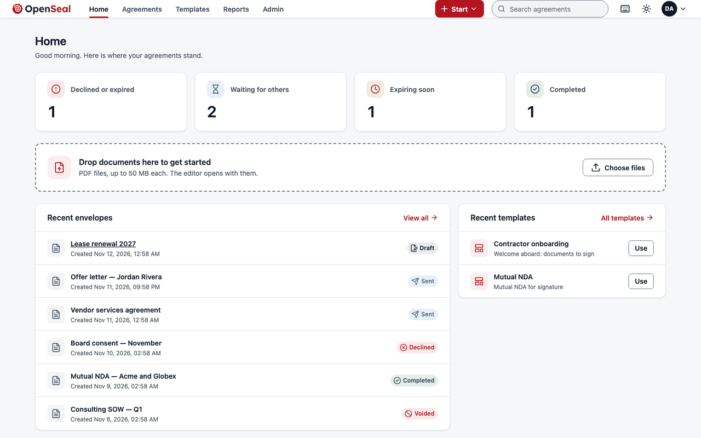
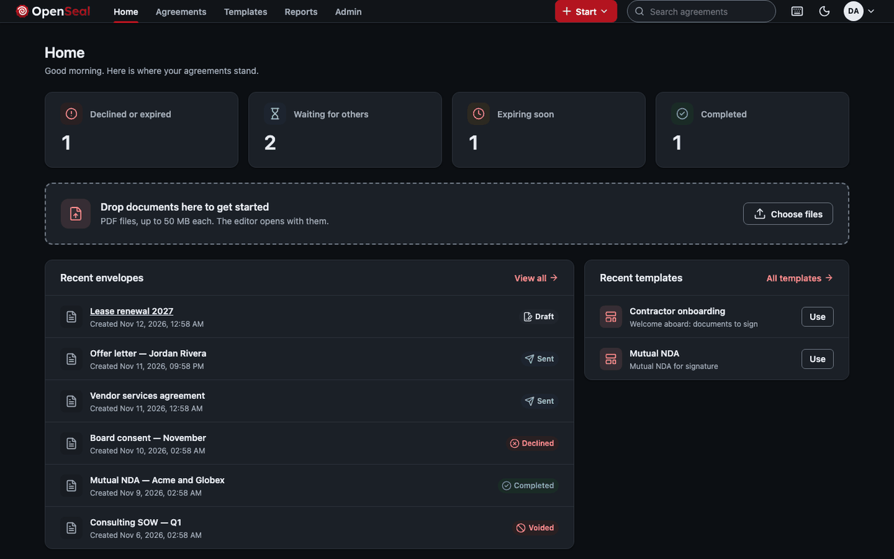
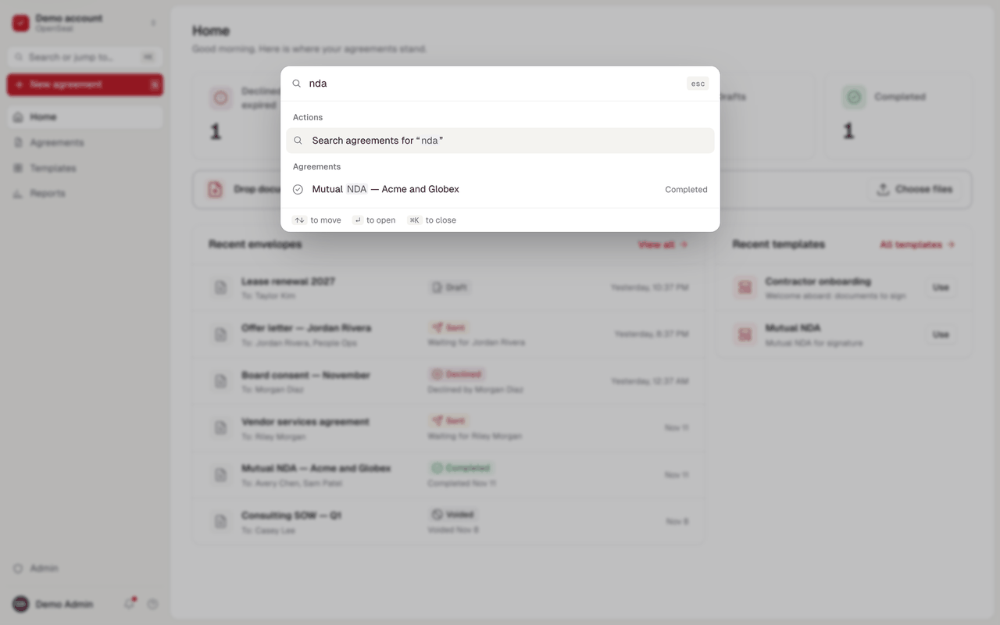
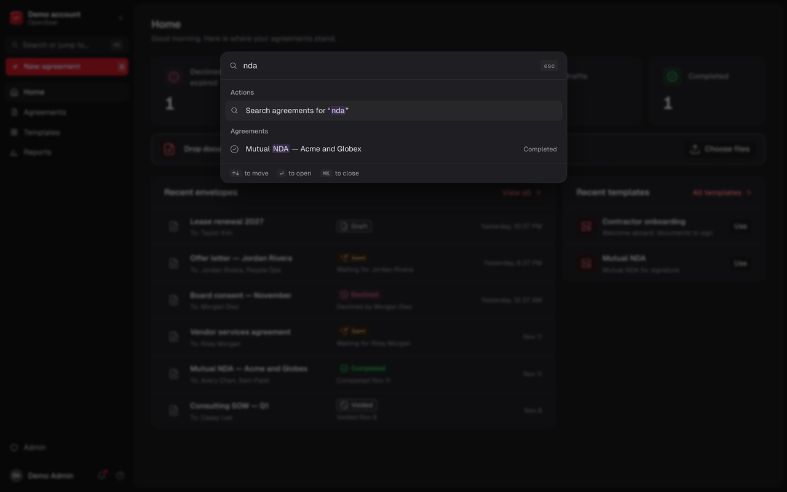
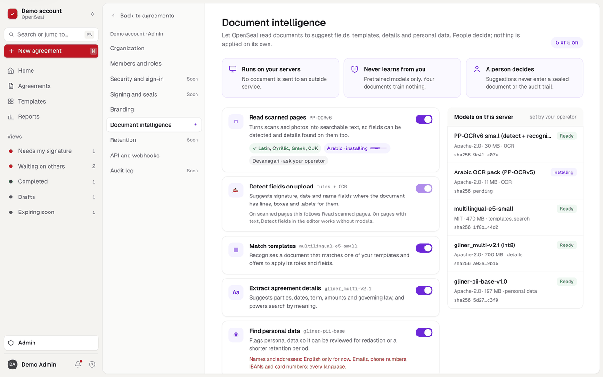
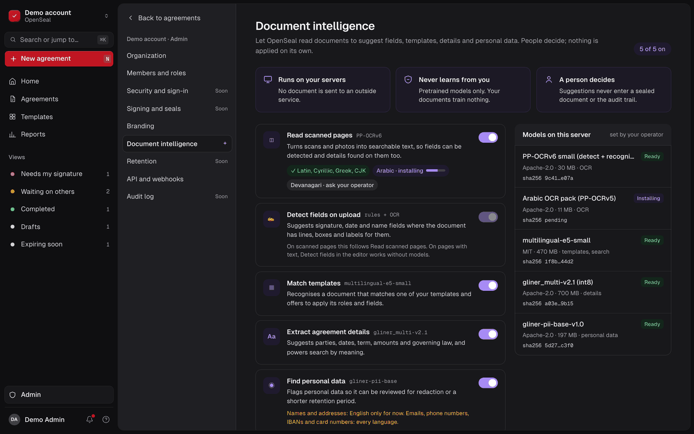
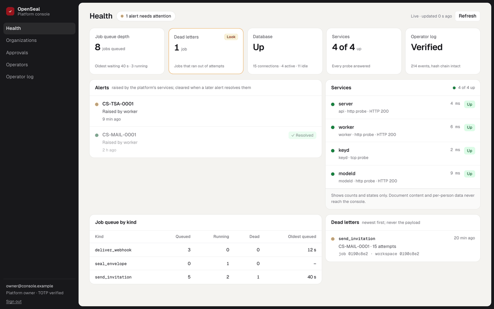

Every agreement in one list
Your inbox, drafts, waiting for others, expiring soon, completed and your own folders: grouped so you see what needs you first.


OpenSeal is an Apache-2.0 signing and verification engine you embed: a Rust engine, a verifier that runs in the browser, and an API and SDK. On top of it sits a complete e-signature web app, the reference product: send documents, sign on any device, and get back a sealed PDF anyone can check offline, with no account and no server of ours.
The demo runs in your browser with sample data: send and sign an agreement, no install, nothing sent. Or verify a sealed PDF right here. Pre-release: read the limits first.




Built on open standards, checked by independent validators
The part that matters for evidence is a library, not a service: deterministic Rust that reads, fills, seals and verifies PDFs, with no clock, randomness or keys of its own. Embed it in your product, or run the whole platform built on it.
casual-sign-* crates: a bounded PDF reader, form filling, flattening, PAdES sealing, the verifier and the audit chain.casual-sign-sdk for the pipeline in-process.The names in the strip above are what make a finished agreement checkable by anyone, years from now, without asking us.
PAdES is the European standard for digital signatures in PDF files. The seal travels with the document, and any PDF validator that knows the standard can read it, not only ours.
So: the proof does not depend on OpenSeal still existing.
A timestamp authority, an independent service, signs the moment the seal was made. The time does not come from our clock or yours, so it cannot be backdated later without the timestamp failing.
So: "when" is proven, not claimed.
Every check uses only the file: whether a byte changed, who sealed it, when, and what was added afterwards. It runs in a browser or on the command line, with no account and no network.
So: the other party, an auditor or a court can check it themselves.
These are technical properties. Whether a signature is legally effective depends on the jurisdiction, the transaction and how a deployment is run; OpenSeal is designed to support e-signature laws such as ESIGN, UETA and eIDAS and makes no claim of legal validity, compliance or certification.
Every item is a row on the roadmap, kept in step with the project's tracker.
Upload a PDF, add the people in order or in parallel, and place fields where they belong. The page gets the screen; tools stay out of the way until you pick one.


Your inbox, drafts, waiting for others, expiring soon, completed and your own folders: grouped so you see what needs you first.
Search agreements, templates and actions from one box, by keyboard alone.


When the last person signs, everyone can download the sealed copy, and anyone can check it later.


People, invitations, groups, permission profiles, API clients, webhooks and a hash-chained admin log per workspace, with organizations above them.


Signers need no account. A guide takes them from field to field, shows what is left, and finishes with a review of exactly what they signed.


A completed agreement shows which document every party saw, who signed it, when and how. Drop the sealed PDF on the Verify page: the check runs in your browser in WebAssembly, and the file never leaves your machine.


A separate model service runs beside the rest of the stack, so documents never leave your servers to be read. What it finds is a suggestion a person accepts or dismisses; every feature is off by default, and none of it enters the sealed PDF or the audit trail.
Illustration. In the app, violet marks model suggestions and nothing else.
A separate console, with its own sign-in and second factor, for operators of a deployment: health, organizations, approvals, signing keys and certificates, timestamp authorities, plans and usage limits, and an operator log. It sees counts and states, never document content. It is built and tested, not yet a Compose service, and its further work is paused until the first-signature milestone closes.

One command builds and starts the whole stack on a machine with Docker. Nothing calls home. Then drive it from your own product with an API in the shapes DocuSign and SignNow integrators expect.
# Build and start everything
git clone https://github.com/CasualOffice/openseal
cd openseal
docker compose up -d --build --wait
# Create the first account and administrator
docker compose exec \
-e OPENSEAL_ADMIN_PASSWORD='a long passphrase' \
server casual-sign-server bootstrap \
"Acme" admin@acme.example "Ada Admin"# Create and send an envelope in one call
curl https://sign.example.com/api/v1/envelopes \
-H "Authorization: Bearer $OPENSEAL_KEY" \
-H "Idempotency-Key: $(uuidgen)" \
-H "Content-Type: application/json" \
-d @envelope.json
# Events arrive as signed webhooks
# (Standard Webhooks), retried with backoffEvery serious open-source e-signature project is AGPL, which most companies cannot ship inside their products. OpenSeal can go anywhere. Bulk send, groups, permission profiles and webhooks are already in the open core, and conditional fields, SSO and embedding are planned for it, not for a paid tier.
From each product's public documentation. Where OpenSeal's answer is still on the roadmap, the table says so.
| Question | OpenSeal | DocuSign | SignNow | AGPL projects DocuSeal, Documenso, OpenSign |
|---|---|---|---|---|
| Licence | Apache-2.0 | Proprietary service | Proprietary service | AGPL-3.0 |
| Run it on your own servers | Yes, Docker Compose today | No, vendor cloud | No, vendor cloud | Yes |
| Embed in a closed-source product | Yes, no copyleft | Through their paid API | Through their paid API | AGPL terms apply; some embedding is paid |
| Bulk send, conditional fields, SSO | Open core, no tiers: bulk send built; conditional fields and SSO planned | Higher plans | Higher plans | Mostly paid editions |
| Verify a completed PDF offline | In-browser verifier and CLITested: CI job wasm-parity | In a PDF reader | Not documented | Documenso: no verifier; DocuSeal: basic |
| Independent validators in CI | pyHanko and EU DSSTested: CI job validators | Not published | Not published | Not published |
| Long-term validation (B-LT, B-LTA) | Built; B-T is the defaultTested: sealing tests at every level | Not documented | Not documented | Documenso: B-B to B-LTA; others limited |
| Signing key custody | Your HSM via PKCS#11Depends on your deployment: your HSM and PKCS#11 module | Vendor-managed | Vendor-managed | Mostly a .p12 file |
| Audit evidence | Hash-chained trail inside the PDF, plus a certificateTested: tamper tests on the chain | Certificate of completion | Audit trail report | Audit log and certificate pages |
Compiled from public documentation in November 2026; vendors change their products and plans. "Planned" rows are open work on the roadmap. OpenSeal is designed to support e-signature laws; it makes no legal or certification claim.
More in the documentation FAQ.
Not yet. v0.0.1 is a pre-release for evaluation: the engine is complete and tested, and the server and web app run end to end on Docker Compose, but the development stack makes its own certificate authority, and the release gates (an external security review, an accessibility audit, validation in Adobe Acrobat and a counsel review) are still ahead. The roadmap shows what comes next.
OpenSeal is designed to support electronic-signature laws such as ESIGN, UETA and eIDAS. Whether a given signature is valid depends on your deployment, its configuration, the jurisdiction and the transaction. Nothing here is legal advice.
Use the Verify page on this site, or the one in any OpenSeal install; the check runs in your browser and the file stays on your machine. The openseal command line runs the same check offline. The seal is standard PAdES, so independent tools such as pyHanko and EU DSS validate it too.
The model service runs on your own servers, beside the rest of the stack, and every feature is off until an administrator turns it on. It uses pretrained models only and is designed so that nothing learns from your documents. What it finds is a suggestion; nothing a model says enters the sealed PDF or the audit trail.
Yes. Apache-2.0 allows commercial and proprietary use, embedding, hosting and resale. When you redistribute it, keep the LICENSE and the NOTICE file. See brand and attribution.
Yes: a REST API under /api/v1 with API keys and OAuth client credentials, idempotency keys, ETags, and webhooks signed with the Standard Webhooks scheme. Read the API reference.
In a separate service, keyd, which talks PKCS#11 to your HSM (SoftHSM in the development stack) and signs digests only. File keys are refused outside development.
The demo needs nothing installed. When you want the real thing, Docker Compose brings up the server, the worker, the key service, the database, storage, a mail catcher and a timestamp authority.
$ docker compose up -d --build --wait